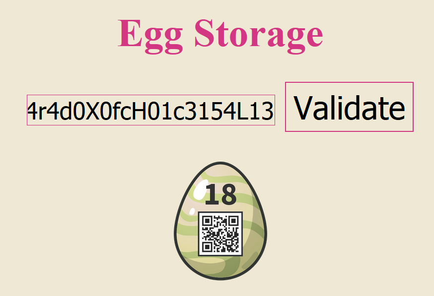

Last year someone stole some eggs from Thumper.
This year he decided to use cutting edge technology to protect his eggs.
This was a tough one ... The Egg Storage page is basically a set of JavaScript functions built around central WebAssembly code which is expressed by the content array of integers (shortened below). WebAssembly (wasm) is binary code executed in a browser sandbox, pretty much like JavaScript but much faster.
document.getElementById('egg').addEventListener('submit', (e) => {
e.preventDefault();
const password = document.getElementById('pass').value.split('').map(e => e.charCodeAt(0));
const content = new Uint8Array([0,97,115,109,1,0,0,0, ...,7,87,122,80,4]);
function setResultImage(image) {
const result = document.getElementById('result');
result.setAttribute('src', `../../images/${image}.png`);
}
function showError() {
setResultImage('flag_error');
setTimeout(() => setResultImage('flag_gray'), 1000);
}
function getEgg(instance) {
const memory = new Uint8Array(instance.exports['0'].buffer);
let flag = '';
for (let i = 0; i < 24; i++) {
flag += String.fromCharCode(memory[i]);
}
return flag;
}
function callWasm(instance) {
if (instance.exports.validatePassword(...password)) {
setResultImage(`eggs/${getEgg(instance)}`);
} else {
showError();
}
}
function nope() {
for (let i = 0; i < 100; i++) {
debugger;
}
return 1337;
}
function compileAndRun() {
WebAssembly.instantiate(content, {
base: {
functions: nope
}
}).then(module => callWasm(module.instance));
}
compileAndRun();
return false;
});
The JavaScript above is executed when a 24 character password has been entered in the mask of the application.
The function compileAndRun() is called in order to create an instance of the wasm code,
which is then passed to callWasm(instance). Here, the wasm function call
validatePassword(password) is executed, where password is the string entered into the
application mask, represented as array of char codes. If the wasm function call fails, a cracked egg is
shown briefly, and the script terminates. If it succeeds, the wasm function generates the flag as an array of 24
char-codes, which is converted into a flag string by getEgg(instance). This flag string is used by
setResultImage(image) to load the image /images/eggs/<flag string>.png into
the application.
To analyse the wasm code, the WebAssembly Binary Toolkit (WABT) can be used, which converts wasm binary code into a text format called WAT (WebAssembly Text format). WAT has all the charms of assembly language, and the official language specification is quite incomprehensible to the uninitiated. A nice introduction can be found here or here.
The wasm code has three parts, the functions validateRange, validatePassword and decrypt. Its structure:
(module (type $t0 (func (param i32) (result i32))) (type $t1 (func (param i32 i32 ... <24 times> ... i32 i32) (result i32))) (type $t2 (func (result i32))) (type $t3 (func (result i32))) (import "base" "functions" (func $base.functions (type $t3))) (func $validateRange (export "validateRange") (type $t0) (param $p0 i32) (result i32) ... (func $validatePassword (export "validatePassword") (type $t1) (param $p0 i32) (param $p1 i32) (param $p2 i32) ... (param $p23 i32) (result i32) ... (func $decrypt (export "decrypt") (type $t2) (result i32) ... (memory $0 (export "0") 1 1) (data $d0 (i32.const 0) "fQ\01iP\13WP\03j\06\07\07{\05\04P\0b\06\07WzP\04"))
The function validateRange takes one integer as parameter and tests whether it lies within the set [48, 49, 51, 52, 53, 72, 76, 88, 99, 100, 102, 114] corresponding to the 12 characters [01345HLXcdfr]
(func $validateRange (export "validateRange") (type $t0) (param $p0 i32) (result i32)
(if $I0
(i32.or
(i32.or
(i32.or
(i32.or
(i32.or
(i32.or
(i32.or
(i32.or
(i32.or
(i32.or
(i32.or
(i32.eq
(i32.const 48)
(local.get $p0))
(i32.eq
(i32.const 49)
(local.get $p0)))
(i32.eq
(i32.const 51)
(local.get $p0)))
(i32.eq
(i32.const 52)
(local.get $p0)))
(i32.eq
(i32.const 53)
(local.get $p0)))
(i32.eq
(i32.const 72)
(local.get $p0)))
(i32.eq
(i32.const 76)
(local.get $p0)))
(i32.eq
(i32.const 88)
(local.get $p0)))
(i32.eq
(i32.const 99)
(local.get $p0)))
(i32.eq
(i32.const 100)
(local.get $p0)))
(i32.eq
(i32.const 102)
(local.get $p0)))
(i32.eq
(i32.const 114)
(local.get $p0)))
(then
(return
(i32.const 1))))
(return
(i32.const 0)))
Equivalent python code:
def validateRange(c):
return chr(c) in "01345HLXcdfr"
The second function validatePassword takes the 24 password character codes as parameters and performs a
series of tests on them. If successful, the flag is decrypted. See comments within the code.
Note that there is a bug in the code: in the second block, the second to last line should be
(local.get $p124) and not (local.get $p23).
(func $validatePassword (export "validatePassword") (type $t1) (param $p0 i32) ... (param $p23 i32) (result i32) (local $l24 i32) (local $l25 i32) (local $l26 i32) (drop (call $base.functions)) ;; store the parameters $p0 ... $p23 in linear memory at offsets 24, 25, ... 47 (i32.store8 (i32.const 24) (local.get $p0)) (i32.store8 offset=1 (i32.const 24) (local.get $p1)) (i32.store8 offset=2 (i32.const 24) (local.get $p2)) ;; ... (i32.store8 offset=23 (i32.const 24) (local.get $p23)) (local.set $l24 (i32.const 4)) ;; check parameters $p4 ... $p23 with validateRange, and stop on failure (loop $L0 (if $I1 (i32.eqz (call $validateRange (i32.load8_u (i32.add (i32.const 24) (local.get $l24))))) (then (return (i32.const 0)))) (local.set $l24 (i32.add (local.get $l24) (i32.const 1))) (br_if $L0 (i32.le_s (local.get $p23) (i32.const 24)))) ;; perform 17 tests on the parameters, and stop on failure (if $I2 ;; $p0 == 84 (i32.ne (local.get $p0) (i32.const 84)) (then (return (i32.const 0)))) (if $I3 ;; $p1 == 104 (i32.ne (local.get $p1) (i32.const 104)) (then (return (i32.const 0)))) (if $I4 ;; $p2 == 51 (i32.ne (local.get $p2) (i32.const 51)) (then (return (i32.const 0)))) (if $I5 ;; $p3 == 80 (i32.ne (local.get $p3) (i32.const 80)) (then (return (i32.const 0)))) (if $I6 ;; $p17 == $p23 (i32.ne (local.get $p23) (local.get $p17)) (then (return (i32.const 0)))) (if $I7 ;; $p12 == $p16 (i32.ne (local.get $p12) (local.get $p16)) (then (return (i32.const 0)))) (if $I8 ;; $p15 == $p22 (i32.ne (local.get $p22) (local.get $p15)) (then (return (i32.const 0)))) (if $I9 ;; $p5 - $p7 == 14 (i32.ne (i32.sub (local.get $p5) (local.get $p7)) (i32.const 14)) (then (return (i32.const 0)))) (if $I10 ;; $p14 + 1 == $p15 (i32.ne (i32.add (local.get $p14) (i32.const 1)) (local.get $p15)) (then (return (i32.const 0)))) (if $I11 ;; p9 % p8 == 40 (i32.ne (i32.rem_s (local.get $p9) (local.get $p8)) (i32.const 40)) (then (return (i32.const 0)))) (if $I12 ;; $p5 - $p9 + $p19 == 79 (i32.ne (i32.add (i32.sub (local.get $p5) (local.get $p9)) (local.get $p19)) (i32.const 79)) (then (return (i32.const 0)))) (if $I13 ;; $p7 - $p14 == $p20 (i32.ne (i32.sub (local.get $p7) (local.get $p14)) (local.get $p20)) (then (return (i32.const 0)))) (if $I14 ;; ($p9 % $p4) * 2 == $p13 (i32.ne (i32.mul (i32.rem_s (local.get $p9) (local.get $p4)) (i32.const 2)) (local.get $p13)) (then (return (i32.const 0)))) (if $I15 ;; $p13 % $p6 == 20 (i32.ne (i32.rem_s (local.get $p13) (local.get $p6)) (i32.const 20)) (then (return (i32.const 0)))) (if $I16 ;; $p11 % $p13 == $p21 - 46 (i32.ne (i32.rem_s (local.get $p11) (local.get $p13)) (i32.sub (local.get $p21) (i32.const 46))) (then (return (i32.const 0)))) (if $I17 ;; $p7 % $p6 == $p10 (i32.ne (i32.rem_s (local.get $p7) (local.get $p6)) (local.get $p10)) (then (return (i32.const 0)))) (if $I18 ;; $p23 % $p22 == 2 (i32.ne (i32.rem_s (local.get $p23) (local.get $p22)) (i32.const 2)) (then (return (i32.const 0)))) ;; test sum($p4 ... $p23) == 1352 and xor($p4 ... $p23) == 44) (local.set $l24 (i32.const 4)) (local.set $l25 (i32.const 0)) (local.set $l26 (i32.const 0)) (loop $L19 (local.set $l25 (i32.add (local.get $l25) (i32.load8_u (i32.add (i32.const 24) (local.get $l24))))) (local.set $l26 (i32.xor (local.get $l26) (i32.load8_u (i32.add (i32.const 24) (local.get $l24))))) (local.set $l24 (i32.add (local.get $l24) (i32.const 1))) (br_if $L19 (i32.le_s (local.get $l24) (i32.const 24)))) (if $I20 (i32.ne (local.get $l25) (i32.const 1352)) (then (return (i32.const 0)))) (if $I21 (i32.ne (local.get $l26) (i32.const 44)) (then (return (i32.const 0)))) ;; decrypt flag if successful (drop (call $decrypt)) (return (i32.const 1)))
The following tests are performed on the password:
0. p4, ..., p23 in [48, 49, 51, 52, 53, 72, 76, 88, 99, 100, 102, 114]
1. p0 = 84 (T)
2. p1 = 104 (h)
3. p2 = 51 (3)
4. p3 = 80 (P)
5. p17 = p23
6. p12 = p16
7. p15 = p22
8. p5 - p7 = 14
9. p15 = p14 + 1
10. p9 % p8 = 40
11. p5 - p9 + p19 = 79
12. p7 - p14 = p20
13. (p9 % p4)*2 = p13
14. p13 % p6 = 20
15. p11 % p13 = p21 - 46
16. p7 % p6 = p10
17. p23 % p22 = 2
18. sum($p4 .. $p23) = 1352
19. xor($p4 .. $p23) = 44
The third function decrypt simply XORs the tested password with hard-coded data in order to generate the flag.
(func $decrypt (export "decrypt") (type $t2) (result i32)
(local $l0 i32)
(loop $L0
(i32.store8
(local.get $l0)
(i32.xor
(i32.load8_u
(local.get $l0))
(i32.load8_u
(i32.add
(i32.const 24)
(local.get $l0)))))
(local.set $l0
(i32.add
(local.get $l0)
(i32.const 1)))
(br_if $L0
(i32.le_s
(local.get $l0)
(i32.const 24))))
(return
(i32.const 1337)))
The tests on the password for an underdetermined Diophantine system, which can be pretty ugly to solve. Thankfully the first 4 letters are fixed as "Th3P", and the possible values for the others are very restricted. So:
10. → p8=48, p9=88
13. → p4=52, p13=72
14. → p6=52
8. → p5=100, p7=88 or p5=114, p7=100
16. → p7=100, p10=48 → p5=114
11. → p9 - p19 = 35 → p19=53, p9=88
12., 9. → p14=48, p15=49, p20=52 or p14=51, p15=52, p20=49 or p14=52, p15=53, p20=48
17. → p22=49, p23=51 or p22=51, p23=53 or p22=100, p23=102 or p22=49, p23=100
7., 5. → p14=48, p15=49, p17=51, p20=51, p22=49, p23=51
15. → p11=53, p21=99 or p11=102, p21=76 or p11=114, p21=88
This leaves p11, p12, p16, p18 and p21 unknown, with
18. → p11 + p12 + p16 + p18 + p21 = 425
19. → p11 ^ p12 ^ p16 ^ p18 ^ p21 = 27
In the XOR condition, p12 and p16 cancel (6.), and trying the three options for p11 and p21 gives
p18 = 49, and p11=102, p21=76 or p11=114, p21=88
Only the first of those options can satisfy the sum condition, with p12 = p16 = 99. Finally:
p : 0 1 2 3 4 5 6 7 8 9 10 11 12 13 14 15 16 17 18 19 20 21 22 23
Password = T h 3 P 4 r 4 d 0 X 0 f c H 0 1 c 3 1 5 4 L 1 3
84 104 51 80 52 114 52 100 48 88 48 102 99 72 48 49 99 51 49 53 52 76 49 51
Using the password Th3P4r4d0X0fcH01c3154L13 on the application gives back the egg:
